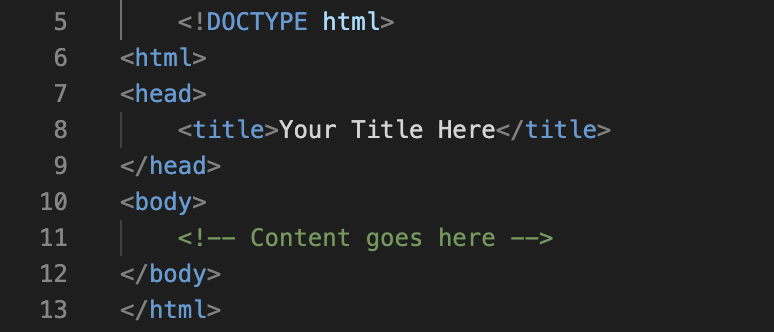
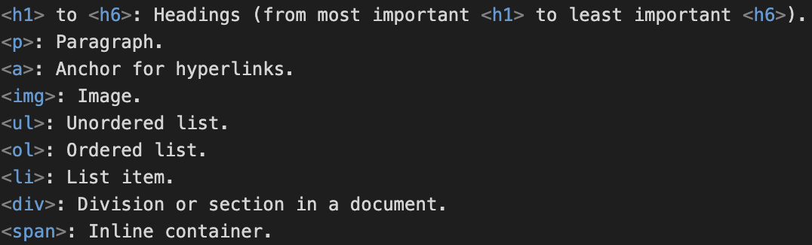

Some HTML basics from research I conducted on my own. Basic HTML document structure/anatomy of a webpage:
Tags are the building blocks of HTML, define the structure of content and are enclosed in opening and closing brackets '< >'. Example:
Attributes provide additional information about the element, and are added within the opening tag. Example:
Common elements:
Extra spaces, tabs and line breaks are ignored in HTML.
The WWW (World Wide Web): An interconnected system of hypertext documents accessible via the Internet. Users navigate through web pages using hyperlinks, accessing information like text, images, and videos hosted on servers worldwide. Created in 1989, the WWW revolutionized how people communicate and access information online. It's a fundamental aspect of the Internet, enabling sharing and exploration of digital content across the globe.